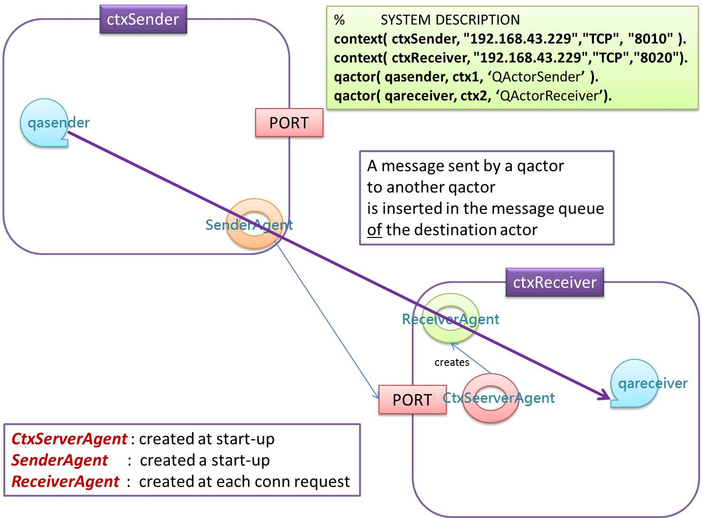

72939 - LAB7 | The QActor metamodel
LabISS-lectures site
The metamodel
QActor is the name given to the custom meta-model inspired to the actor model, as supported by the
Akka library.
The leading
Q/q in the
QActor word, means 'quasi' since the
QActor meta-model does introduce (with respect to
Akka)
its own peculiarities, including reactive actions, even-driven programming concepts and a support for distribution in heterogeneous systems.
The addition of a
k to the prefix (e.g.
qak, Qak) means that we are making reference to the version implemented in
Kotlin,
without using any
Akka support.
Overview
Let us summarize the main features of a
qa-system:
- A QA-System is a collection of active entities (QActors) each working in a computational node (Context).
A QActor can interact with other QActors using Messages of different types (Dispatch,
Request, Invitation, ...) and Events.
- The configuration of a QA-System is explicitly represented by a set of 'facts' written in tuProlog syntax
replicated in each Context (Context Knowledge Base or simply ContextKB). A QA-System
con be configured in a static or in a dynamic way. In case of dynamic configuration, the knowledge about
the configuration is dynamically updated in each Context of the system (not yet implemented in qak).
- The start-up of a distributed QA-System (i.e. a system made of two or more Contexts) is handled by
the run-time support. In particular, the Application code (i.e. the code written into the actors) begins to
run only when all the Contexts are activated.
- The exchange of information among the QActors is implemented by the Qak-Infrastructure.
The Qak-Infrastructure supports interaction among QActors
working in the same Context and/or in different Contexts. In the latter case, the Qak-Infrastructure
exploits the ContextKB in order to deliver a message from the Context of the sender to the Context of the
destination. An event raised in some Context, is delivered to all the other Contexts of the system.

- To deliver information among the Contexts, the QA-Infrastructure can use pairwise TCP connections
between the Contexts or a MQTT broker (see Using MQTT). The choice is up to the Application designer.
- Each QActor logically behaves as a (Moore's) Finite State Automaton (FSM).
While in a state, a QActor can execute
both synchronous and asynchronous actions. An asynchronous action terminates immediately and emits
an event when it terminates.
- A QKActor is able to execute a set of pre-defined actions, including:
forward( msgId : String, msg: String, destActor: ActorBasic)
forward( msgId : String, msg: String, destName: String)
emit( msgId : String, msg : String)
machineExec(cmd: String)
- A QActor is associated to a private knowledge-base (Actor Knowledge Base or simply QaKB) written in Prolog that can be
dynamically extended.
The Application Designer must remember to provide the prefixed set of rules required by the qak-infrastructure. These rule can be found
in sysRules.pl.
Messages
In the QActor metamodel, a message is intended as information sent in asynchronous way by some source to
some specific destination.
For asynchronous transmission we intend that the messages can be 'buffered' by the infrastructure,
while the 'unbuffered' transmission is said to be
synchronous.
A message does not force the execution of code: a message
m sent from an actor sender to an actor receiver
can trigger a state transition in the receiver. If the receiver is not 'waiting' for a
transition including
m the message is enqueued in the receiver queue.
At application-level, we say that a QActor works according to a
message-based behaviour, while at the
lower level (in the infrastructure) it works according to the
massage-driven behaviour.
Events
In the QActor metamodel, an event is intended as information emitted by some source without any explicit
destination. Events can be emitted by the QActors that compose a actor-system or by sources external to the
system.
The occurrence of an event can put in execution some code devoted to the management of that event. We
qualify this kind of behaviour as
event-driven behaviour, since the event 'forces' the execution of code.
An event can also trigger state transitions in components, usually working as Finite state machines. We
qualify this kind of behavior as
event-based behaviour, since the event is 'lost' if no actor is in a state
waiting for it.
Events whose identifier start with the prefix
local_ are not propagated outside the context in which they are generated.
Example: a Producer-Consumer system
Let us consider the following problem:
Design and build a
Distributed software system made of
np, np>=1 QKActors that work as information
Producer
and
nc, nc>=1 QKActors that work as information
Consumer.
A producer is logically related to an
input sensor and generates a sequence of
DataItem objects:
data class DataItem( val item: String, val id : String = DataItem.id ){
companion object { val id = "dataItem" }
}
User story
As a
end user, I want to have the ability :
- start: to activate one producer and one or more consumers.
The DataItem generated by the producer must be received by all the consumers;
- log: to store each item received by each consumer into a permanent store named InpuDataLog;
- show: to show all the data stored in InpuDataLog;
- addConsumer: to dynamically add a new consumer to the system.
Problem analysis
The requirements do not specify whether all the consumers run in a different node with respect to the producer.
Thus, it could be wise to recall the features that
Kotlin (our reference technology here) introduces to face a 'classical'
producer-consumer problem and to see whether they can be useful in our case.
Producers and consumers in Kotlin
Kotlin does introduce a built-in concept of
Producer as an entity associated to a
ReceiveChannel
(see
Lab4.html#producer).
Coroutine builder produce
The coroutine builder
produce takes a suspending lambda as a parameter; only the code within
this lambda can send items to the channel.
The channel has
no buffer by default is closed when the coroutine completes
A simple case
val simpleProducer : ReceiveChannel =
GlobalScope.produce {
for( i in 1..3 ){
println( "simpleProducer produces $i")
send( i )
}
}
suspend fun consume(){
val v = simpleProducer.receive()
println( "consume receives ${v} in ${sysUtil.curThread()}" )
simpleProducer.consumeEach {
println( "consume receives $it in ${sysUtil.curThread()}" )
}
}
|
The full code is in simpleProducerKotlin.kt.
The output is:
simpleProducer produces 1 in thread=DefaultDispatcher-worker-2
simpleProducer produces 2 in thread=DefaultDispatcher-worker-2
consume receives 1 in thread=main
simpleProducer produces 3 in thread=DefaultDispatcher-worker-2
consume receives 2 in thread=main
consume receives 3 in thread=main
BYE
If we omit to call consume(), the output is:
BYE
|
A many-type producer
val context = newSingleThreadContext("myThread")
val producer: ReceiveChannel =
GlobalScope.produce(context, 1){
println( "producer sends 5 in ${sysUtil.curThread()}")
send(5)
println( "producer sends a in ${sysUtil.curThread()}")
send("a")
println( "producer sends 100 in ${sysUtil.curThread()}")
send(100)
}
suspend fun consumer(){
val v = producer.receive()
println( "consumer receives $v in ${sysUtil.curThread()}")
producer.consumeEach {
println( "consumer receives $it in ${sysUtil.curThread()}")}
}
|
The full code is in prodConsKotlin.kt.
When channel capacity = 1, the output is:
producer sends 5 in thread=myThread
consumer receives 5 in thread=main
producer sends a in thread=myThread
producer sends 100 in thread=myThread
consumer receives a in thread=main
consumer receives 100 in thread=main
BYE
When channel capacity = 3, the output is:
producer sends 5 in thread=myThread
producer sends a in thread=myThread
producer sends 100 in thread=myThread
consumer receives 5 in thread=main
consumer receives a in thread=main
consumer receives 100 in thread=main
BYE
|
Many consumers
val aProducer : ReceiveChannel = GlobalScope.produce{
for( i in 1..3 ){
println( "aProducer produces $i in ${sysUtil.curThread()}")
send( i )
}
}
fun consumer1(scope: CoroutineScope){
scope.launch{
delay(100)
val v = aProducer.receive()
println( "consumer1 receives ${v} in ${sysUtil.curThread()}" )
}
}
fun consumer2(scope: CoroutineScope){
scope.launch{
for( i in 1..2 ) {
val v = aProducer.receive()
println("consumer2 receives ${v} in ${sysUtil.curThread()}")
delay(100)
}
}
}
|
The full code is in prodManyConsKotlin.kt.
The output is:
BYE
aProducer produces 1 in thread=DefaultDispatcher-worker-1
consumer2 receives 1 in thread=main
aProducer produces 2 in thread=DefaultDispatcher-worker-1
consumer1 receives 2 in thread=main
aProducer produces 3 in thread=DefaultDispatcher-worker-1
consumer2 receives 3 in thread=main
|
The problem is that our consumers must work on different nodes and could be written in languages different from
Kotlin.
Producer as a Kotlin suspendable sequence
Kotlin introduces the concept of
suspendable sequence i.e.
a coroutine builder that can
suspend between invocation by using the
yield() function (see
Lab4.html#yield).
We could define a producer-consumer system based on suspendable sequence
val seqProd = sequence{
var v = 1
for(i in 1..3){
yield( v )
//println( "seqProd produced $v in ${sysUtil.curThread()}")
v++
}
//println( "seqProd generateSequence ")
yieldAll( generateSequence(2) { it * 2 } )
}
suspend fun seqcons1( scope : CoroutineScope){
println("seqcons1 STARTS")
scope.launch {
for( i in 0 .. 5 ) {
val v = seqProd.elementAt(i)
println("seqcons1 $i receives $v in ${sysUtil.curThread()}")
delay(100) //release control
}
}
}
suspend fun seqcons2( scope : CoroutineScope ){
println("seqcons2 STARTS")
scope.launch {
for( i in 1 .. 3 ) {
val vlist = seqProd.take(i*3).filter { it % 2 == 0 }.toList()
println("seqcons2 receives $vlist in ${sysUtil.curThread()}")
delay(100) //release control
}
}
}
fun main() = runBlocking{
seqcons1(this)
seqcons1(this)
println( "BYE")
}
|
The full code is in prodSequenceKotlin.kt.
The OUTPUT is:
seqcons1 STARTS
seqcons2 STARTS
BYE
seqcons1 0 receives 1 in thread=main
seqcons2 receives [2] in thread=main
seqcons1 1 receives 2 in thread=main
seqcons2 receives [2, 2, 4, 8] in thread=main
seqcons1 2 receives 3 in thread=main
seqcons2 receives [2, 2, 4, 8, 16, 32, 64] in thread=main
seqcons1 3 receives 2 in thread=main
seqcons1 4 receives 4 in thread=main
seqcons1 5 receives 8 in thread=main
|
The problem is that our producer does not recompute the values when needed by the consumers.
Observable Actors
Reactive programming is a combination of the best ideas from the Observer pattern,
the Iterator pattern, and functional programming.
In reactive programming, the consumer reacts to the data as it comes in.
This is the reason why asynchronous programming is also called reactive programming.
Reactive programming allows to propagates event changes to registered observers.
Let us add the following properties to our ActorBasic:
abstract class ActorBasic( ... ) {
protected val subscribers = mutableListOf()
fun subscribe( a : ActorBasic) : ActorBasic {
subscribers.add(a)
return a
}
fun unsubscribe( a : ActorBasic) {
subscribers.remove(a)
}
suspend fun emitLocalStreamEvent(v: ApplMessage ){
subscribers.forEach { it.actor.send(v) }
}
From now on, we can use an ActorBasic as an observable producer of data; it can be observed by other actors
subscribed to it. Each subscriber will process the data 'in parallel' with the others and can work as an observable in its turn.
Producer as an observable actor
The ProducerStream starts when it receives the message "start"
with the length of the sequence (max) to generate.
From now on, it generates the sequence of natural numbers from 1 to max,
by using emit to generate an auto-stimulation event to continue the work.
|
The code is in
ProducerStream.kt
|
The ConsumerSquare generates the square of the natural numbers received in input.
|
The code is in
ConsumerSquare.kt
|
The ConsumerSquare generates the square of the natural numbers received in input.
|
The code is in
ConsumerSquare.kt
|
class Sink(name:String, scope: CoroutineScope) : ActorBasic( name, scope ){
override suspend fun actorBody(msg : ApplMessage){
println(" $name | receives msg= $msg ")
println()
}
}
|
The Sink.kt
simply shows the natural number received in input.
|
According to the Stream computing paradigm, a producer
can be viewed as the generator of a stream of data that works in pipeline with consumers.
For example, the line of code :
prod.subscribe(filter).subscribe(square).subscribe(sink)
defines a system architecture that shows the square of the first max odd natural numbers. The full example
is reported hereunder.
is reported hereunder.
fun main() = runBlocking{
println(" MainProducerStream STARTS ")
val prod = ProducerStream("prod", this )
val filter = Filter("filter",this )
filter.setFilterFunction ( { v: Int -> v %2 != 0 } )
val square = ConsumerSquare("square", this)
val sink = Sink("sink", this)
//prod.subscribe(sink) //(1)
prod.subscribe(filter).subscribe(square).subscribe(sink)
val msgStart = MsgUtil.buildEvent("main", "start", "8" )
prod.actor.send(msgStart)
println(" MainProducerStream ENDS ")
}
If we eliminate the comment on (1), we activate another pipeline that work in parallel with the previous one.
|
The code is in
MainProducerStream.kt.
The OUTPUT is:
MainProducerStream STARTS
MainProducerStream ENDS
filter | receives msg= msg(dataItem,event,prod,none,1,2)
square | receives msg= msg(dataItem,event,prod,none,1,2)
sink | receives msg= msg(dataItem,event,square,none,1,4)
filter | receives msg= msg(dataItem,event,prod,none,2,5)
filter | receives msg= msg(dataItem,event,prod,none,3,7)
square | receives msg= msg(dataItem,event,prod,none,3,7)
sink | receives msg= msg(dataItem,event,square,none,9,9)
filter | receives msg= msg(dataItem,event,prod,none,4,10)
filter | receives msg= msg(dataItem,event,prod,none,5,12)
square | receives msg= msg(dataItem,event,prod,none,5,12)
sink | receives msg= msg(dataItem,event,square,none,25,14)
filter | receives msg= msg(dataItem,event,prod,none,6,15)
filter | receives msg= msg(dataItem,event,prod,none,completed,17)
ProducerStream prod | COMPLETED
square | receives msg= msg(dataItem,event,prod,none,completed,17)
sink | receives msg= msg(dataItem,event,prod,none,completed,17)
|
Back to problem analysis
The main problems posed by the application can be summarized as follows:
The producer:
- must work without any reference/knowledge about the consumers and their location;
- generates input data also in absence of consumers.
Thus, a producer should generate information in form of non-local events.
The system:
- must have the ability to store the received data in the InpuDataLog permanent store, whose nature and
location is not established by the requirements. Thus, we must analyze possible alternatives:
- dataBase: the InpuDataLog is a data-base (e.g. a MongoDB) working on some (remote) node
- logFile: the InpuDataLog is a file managed by a proper QakActor (named logDevice)
- ...
For a first prototype, we could select the logFile option, by leaving to a future step the task of introducing a
no-sql database.
The data should be sent to the InpuDataLog by each consumer. Even in this case we could adopt the usage of events,
to be handled by the logDevice.
A solution with observable actors
The producer works as done in ProducerStream.kt,
i.e. it starts when it receives the message local_start
with the length of the sequence (max) to generate.
From now on, it generates the sequence of natural numbers from 1 to max,
by using emit to generate an auto-stimulation event to continue the work.
|
The code is in
Producer.kt
|
The producer works as an observable actor that updates its observers when a new message is received
|
The code is in
Consumer.kt
|
fun main() = runBlocking {
println("START")
val producer = Producer("producer", this)
val consumer1 = Consumer("consumer1", this)
val consumer2 = Consumer("consumer2", this)
val logger = logDevice("logger", this)
producer.subscribe(consumer1).subscribe(logger)
producer.subscribe(consumer2).subscribe(logger)
MsgUtil.sendMsg("start", "10", producer )
println("END")
}
|
The code is in
MainProducer.kt
|
A solution based on the qak-infrastructure
At each 'click', the button emits the qak-event start with content 5 (the number of data to be produced)
|
The code is in
ButtonGuiActork.kt
|
context(ctxProducer,"localhost", "TCP", 8010).
context(ctxConsumer,"localhost", "TCP", 8020).
qactor( button, ctxProducer, "it.unibo.qak.producer.ButtonGuiActork").
qactor( producer, ctxProducer, "it.unibo.qak.producer.Producer").
qactor( consumer1, ctxConsumer, "it.unibo.qak.consumer.Consumer").
qactor( consumer2, ctxConsumer, "it.unibo.qak.consumer.Consumer").
qactor( logger, ctxConsumer, "it.unibo.qak.logger.logDevice").
A producer and two consumers work in two different contexts. A logger runs in the ctxConsumer.
Each consumer is an observable actor that does not emit qak-events; thus the logger is subscribed to it.
Since the producer emits the a qak-event with identifier DataItem.id, the logger receives
also the data generated by the producer.
|
fun main()= runBlocking {
QakContext.createContexts(
"localhost", this,
"src/main/kotlin/it/unibo/qak/producer/sysDescr.pl",
"sysRules.pl"
)
val consumer1 = QakContext.getActor("consumer1")
val consumer2 = QakContext.getActor("consumer2")
val logger = QakContext.getActor("logger")
consumer1!!.subscribe( logger!! )
consumer2!!.subscribe( logger!! )
println("END")
The code is in
MainProducerQak.kt
sysDescr.pl ,
Producer.kt ,
Consumer.kt
|
When we click on the button, the OUTPUT is:
| With delay in producer |
Without delay in producer |
logger | receives 1 from producer
logger | receives 1 from consumer1
logger | receives 1 from consumer2
logger | receives 2 from producer
logger | receives 2 from consumer1
logger | receives 2 from consumer2
logger | receives 3 from producer
logger | receives 3 from consumer1
logger | receives 3 from consumer2
logger | receives 4 from producer
logger | receives 4 from consumer1
logger | receives 4 from consumer2
logger | receives 5 from producer
logger | receives 5 from consumer1
logger | receives 5 from consumer2
Producer producer | COMPLETED
logger | receives completed from producer
logger | receives completed from consumer1
logger | receives completed from consumer2
|
Producer producer | COMPLETED
logger | receives 1 from producer
logger | receives 2 from producer
logger | receives 3 from producer
logger | receives 1 from consumer2
logger | receives 1 from consumer1
logger | receives 2 from consumer1
logger | receives 3 from consumer1
logger | receives 2 from consumer2
logger | receives 3 from consumer2
logger | receives 4 from producer
logger | receives 4 from consumer1
logger | receives 4 from consumer2
logger | receives 5 from producer
logger | receives 5 from consumer1
logger | receives 5 from consumer2
logger | receives completed from producer
logger | receives completed from consumer2
logger | receives completed from consumer1
|
Using MQTT
In several situations, it could be preferable to manage the interaction among the actors working on different nodes by using the
publish-subscribe MQTT (Message Queue Telemetry Transport)
protocol rather than the built-in qak-infrastructure.
Let us add the following properties to our ActorBasic:
abstract class ActorBasic( ... ) : MqttCallback {
fun checkMqtt(){
if( context!!.mqttAddr.length > 0 ){
mqtt.connect(name,context!!.mqttAddr)
mqttConnected = true
mqtt.subscribe(this, "unibo/qak/$name")
mqtt.subscribe(this, "unibo/qak/events")
}
}
override fun messageArrived(topic: String, msg: MqttMessage) {
val m = ApplMessage( msg.toString() )
this.scope.launch{ actor.send( m ) }
}
override fun connectionLost(cause: Throwable?) {
println(" ActorBasic $name | connectionLost $cause " )
}
override fun deliveryComplete(token: IMqttDeliveryToken?) {
//println(" ActorBasic $name | deliveryComplete token= "+ token );
}
Now, the qak-infrastructure can be extended to support system descriptions like that shown in the following example:
mqttBroker( "localhost", 1883 ).
context(ctxProducer,"localhost", "TCP", "8010").
context(ctxConsumer,"localhost", "MQTT", "0"). %%The port is not considered here
qactor( button, ctxProducer, "it.unibo.qak.prodConsMqtt.ButtonGuiActork").
qactor( producer, ctxProducer, "it.unibo.qak.prodConsMqtt.ProducerMqtt").
qactor( consumer1, ctxConsumer, "it.unibo.qak.prodConsMqtt.ConsumerMqtt").
qactor( consumer2, ctxConsumer, "it.unibo.qak.prodConsMqtt.ConsumerMqtt").
|
The code is in
MainProdConsMqtt.kt
Remember to activate a MQTT broker (e.g. Mosquitto) on the localhost.
|
data class DataItem( val item: String, val id : String = DataItem.id ){
companion object { val id = "dataItem" }
}
|
The producer generates data of type DataItem .
The code is in
DataItem.kt
|
override suspend fun actorBody(msg: ApplMessage) {
println(" Producer $name | receives msg= $msg ")
when ( msg.msgId() ) {
"local_start" -> {
val d = DataItem( "data(${n})")
emit(d.id, d.item)
n++
}
else -> println(" Producer $name | msg= $msg ")
}
}
|
At each 'click' of the ButtonGuiActork.kt,
the producer receives a local_start event and emits a new DataItem event.
The code is in
ProducerMqtt.kt
|
override suspend fun actorBody(msg: ApplMessage) {
println(" Consumer $name | receives msg= $msg ")
forward("answer", msg.msgContent(), msg.msgSender())
}
|
The consumer sends an asnwer to the sender.
The code is in
ConsumerMqtt.kt
|
Executable jars
plugins {
id 'java'
id 'org.jetbrains.kotlin.jvm' version '1.3.21'
id 'application'
}
...
mainClassName = 'it.unibo.qak.sonar.SonarShowKt'
jar {
println("executing jar")
manifest {
attributes 'Main-Class': "it.unibo.qak.sonar.SonarShowKt"
}
}
|
The build file is in
build.gradle
The main we use for this example is in
mainProdConsLocal.kt
Note that the main class is named it.unibo.qak.prodCons.MainProdConsLocalKt
|
context(ctxProducer,"localhost", "TCP", 8010).
context(ctxConsumer,"localhost", "TCP", 8020).
qactor( button, ctxProducer, "it.unibo.qak.producer.ButtonGuiActork").
qactor( producer, ctxProducer, "it.unibo.qak.producer.Producer").
qactor( consumer, ctxConsumer, "it.unibo.qak.consumer.Consumer").
|
The system description is now written in in the main directory of the project:
sysDescr.pl
|
gradle build jar
|
Generates the distribution file is the directory build/distributions
|
- unzip the distribution file in some dir
- work in the bin directory
- copy in this directory the files sysDescr.pl and
sysRules.pl
|
Activate the system by running: it.unibo.xxx.bat
On RaspberryPi : bash it.unibo.xxx
|